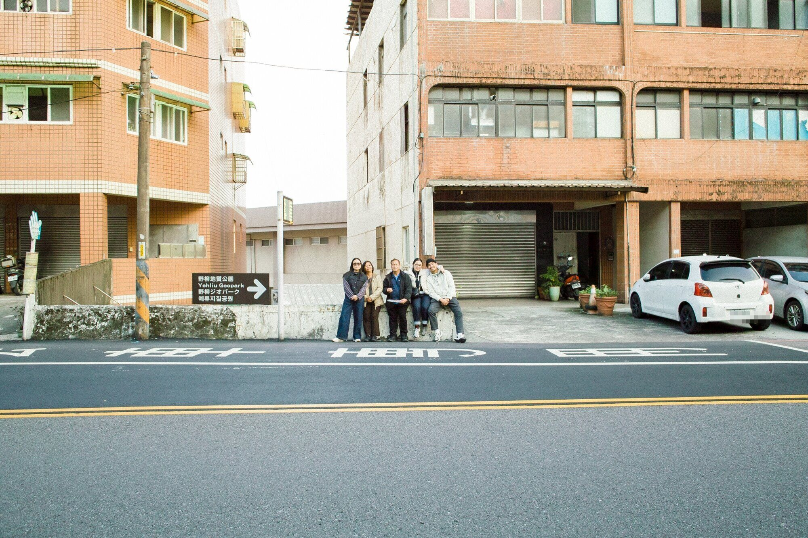

Photographs from trips with the people I know best.
Alleys, trains and doorways, and the odd window onto green.
The north coast and the river, in clear winter light.
Days in the mountain forest, where the cloud came down to meet us.
A flower farm in high summer, and an orange that kept turning up.
A long hot day of trains, gondolas and the zoo, always looking for shade.
I’m an amateur photographer. Most of what I shoot is my own family on the road: the quiet moments between the sights, the backs of heads, the light that finds us.
For bookings and enquiries, message me on Instagram
@neoquiapo